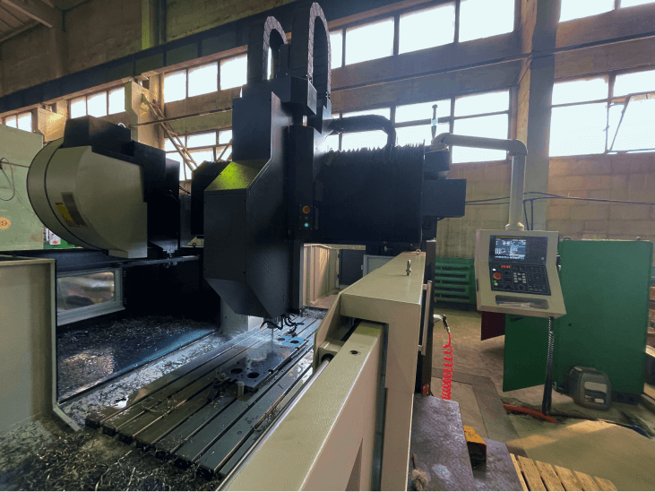

<p>
  Предприятие ООО «Термоблок», входящее в состав Холдинга БСЗ, произвело успешную пуско-наладку нового оборудования -
  портального станка с числовым программным управлением (ЧПУ), способного обрабатывать детали длиной до двух метров.
  Станок используется для изготовления станин различных типов теплообменников.
</p>

